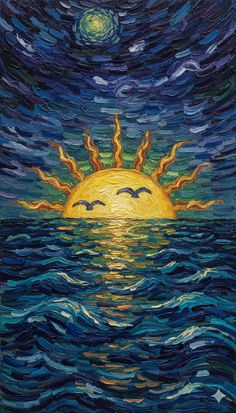
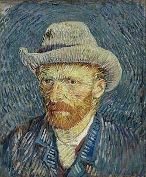
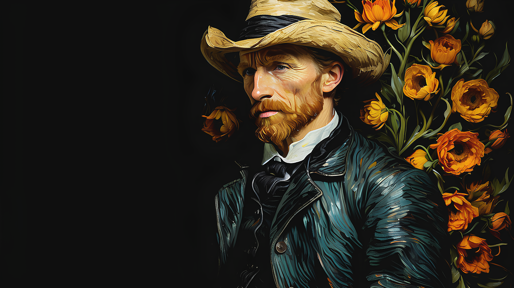
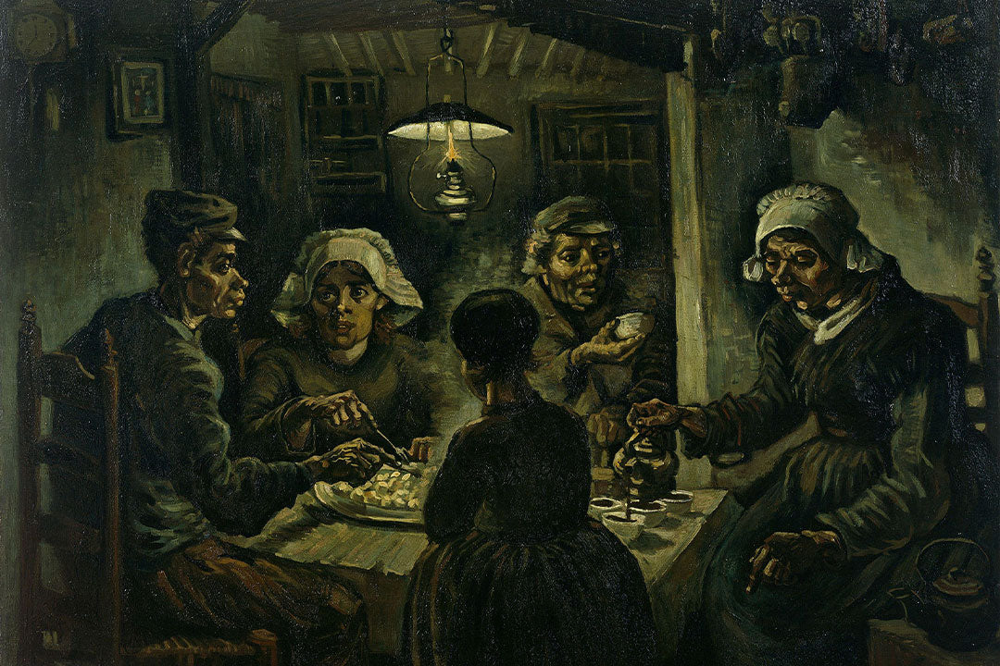
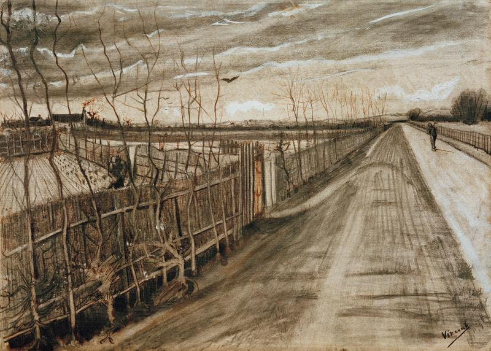
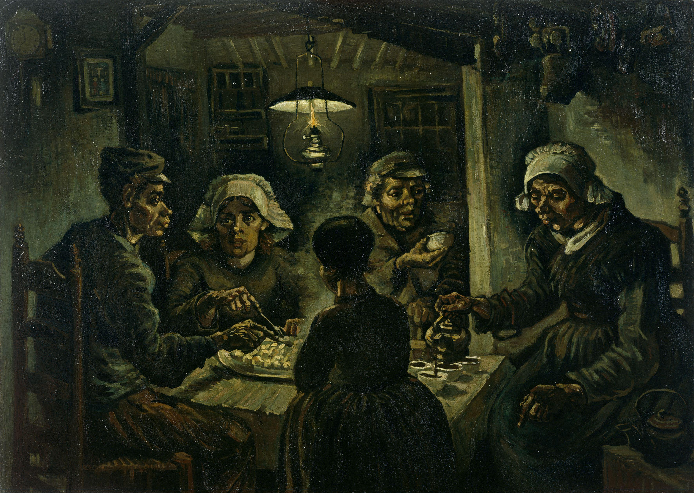
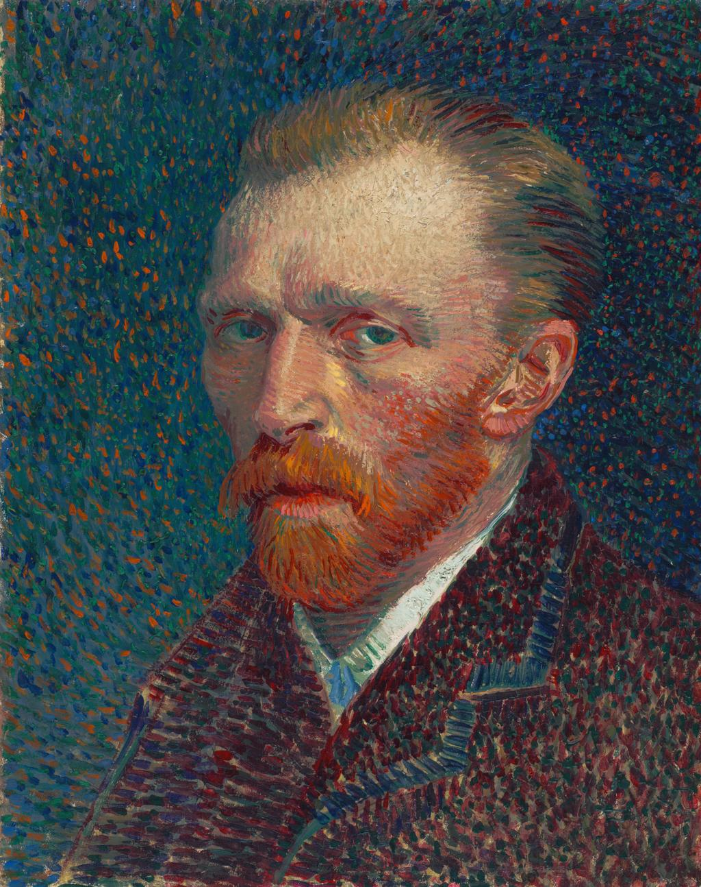
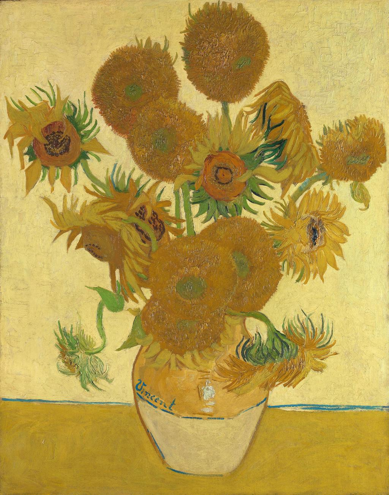
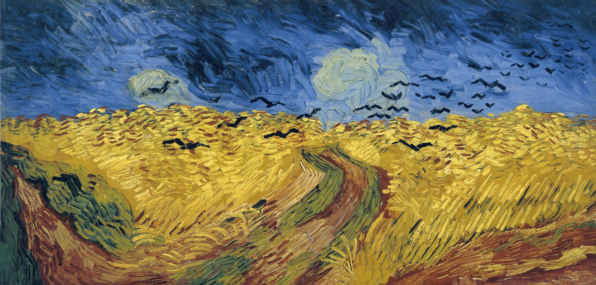

The collection
Explore the painting

.jpg)
.jpg)
.jpg.jpg)
.jpg)
.jpg)
.jpg)
.jpg)
.jpg)
.jpg)
.jpg)



Van Gogh is considered the greatest
a
leading figure of Post-Impressionism.
Some point out in their works the
early signs of expressionism
Explore More
Van Gogh (1853–1890)
Michelangelo (14753–1570)
Leonardo Da Vinci (1452–1519)

1853 — 1880
Vincent van Gogh was born in the Netherlands in 1853. Before becoming a painter, he explored different professions and considered a religious career. At the age of 27, he decided to dedicate himself to art.

1881 — 1885
Van Gogh developed his drawing and painting skills in the Netherlands. He became interested in the lives of rural workers and ordinary people. His early works often featured dark colors and realistic scenes, as seen in The Potato Eaters.

1886 — 1887
In Paris, Van Gogh encountered Impressionism, Japanese prints, and other artists. These experiences encouraged him to experiment with brighter colors, stronger contrasts, and more expressive brushstrokes.

1888 — 1889
Van Gogh moved to Arles in southern France. Inspired by the landscape and sunlight, he created many of his best-known works, including the Sunflowers series. His style became increasingly vivid and expressive.

1889 — 1890
During his final years, Van Gogh continued creating paintings while facing serious health difficulties. He painted The Starry Night in 1889 and died in Auvers-sur-Oise in July 1890, aged 37. His work later became a major influence on modern art.

The collection

